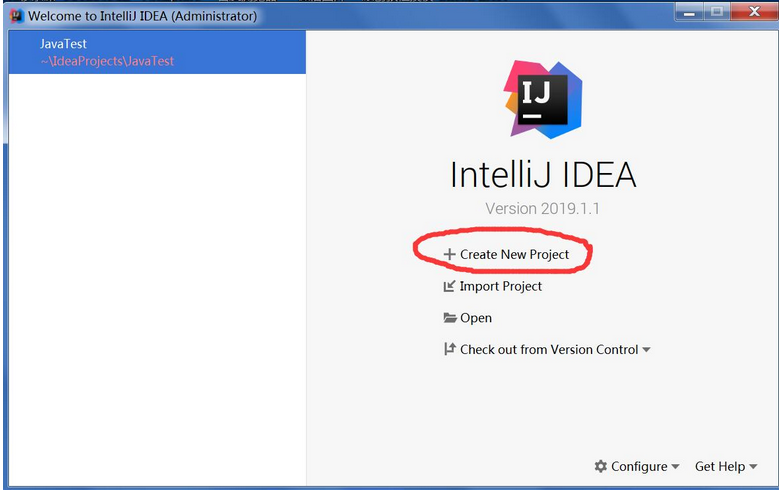
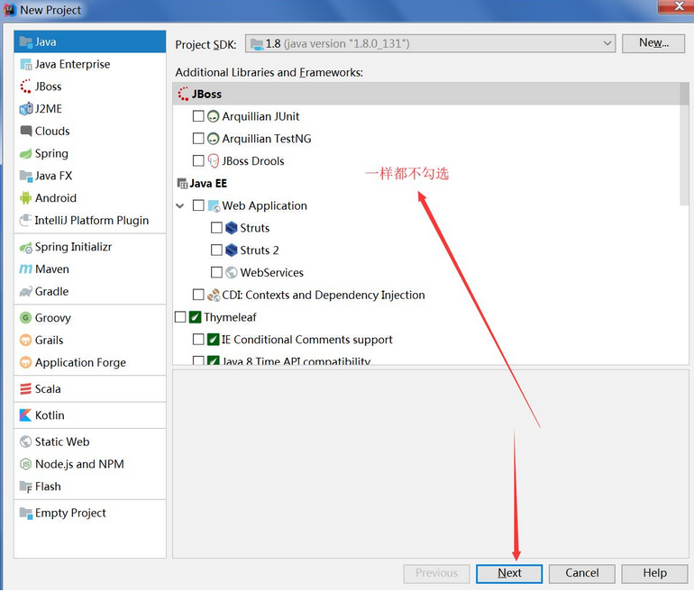
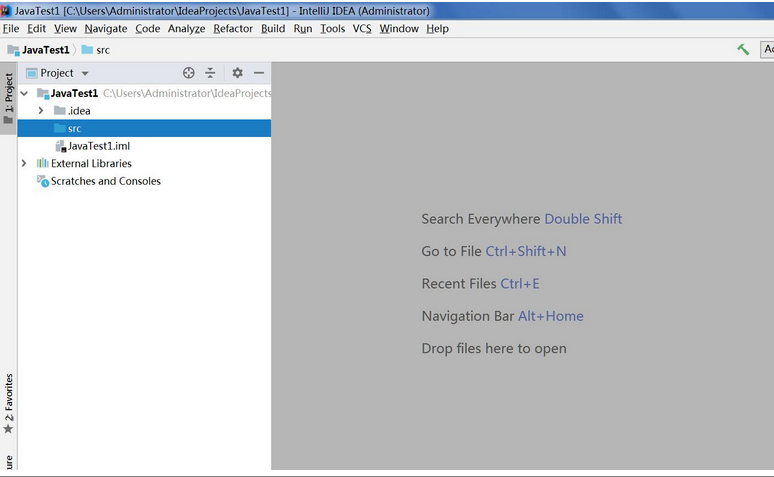

用idea2019开发第一个java程序:
(idea破解不在本讲义范围之内)
新手建议忽略此部分，先把eclipse用熟。技术是一样的。idea缺省配置是黑色的，很晃眼，可以（Files/settings/editor/color scheme，然后右侧框中选择（Default（白色）或者Darcula（黑色）））



底下都一样了。右击src/new/java class, 名字叫Test。
public class Test
{
public static void main(String args[ ])
{
System.out.println("Hello 马克-to-win idea");
}
}
右键一击文件，点击run Test.main()。。。。。。。。。。。。。
文章转载自原文：https://blog.csdn.net/mark_to_win/article/details/89916798